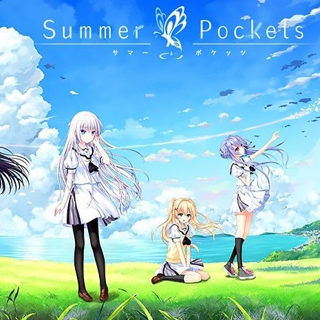

个人推荐
【动画】 吹响上低音号
进入北宇治高中就读的主人公黄前久美子，在同班同学加藤叶月的热烈影响下加入了该校的吹奏部。北宇治高中吹奏部直到5年前还是关西大会的常客，并且过去还是全国大会出场过的强校代表，然而自从顾问换了之后，该吹奏部就再也没有挺进过关西大会。之后以新顾问的赴任为契机，怀揣着高远目标的部员们挥洒着奋斗的青春，过着波澜万丈的每一天。终于，比赛的日子也即将到来……

【游戏】 夏日口袋
为了整理祖母的遗物，男主角鹰原羽伊里利用暑假来到了鸟白岛。在整理祖母遗物的过程中，渐渐的回忆起了儿时的记忆，并且在初次接触的海岛生活中，由一开始的困惑，慢慢变得适应了起来。与眺望大海的少女相遇。同寻找蝴蝶的少女相会。跟探寻回忆和海盗船的少女相见。和安静地生活在灯塔的少女相知。在这座全新的小岛上，得到了新的同伴——要是这个暑假，能永远这么下去就好了。那时，少年不禁这样想到。

【音乐】 范特西
《范特西》是周杰伦2001年9月14日发行的一张专辑，共收录10首歌曲。该专辑的制作人由周杰伦担任。2002年，该专辑获得第13届台湾金曲奖最佳流行音乐专辑奖、新加坡金曲奖年度最畅销专辑等奖项。周杰伦凭借该专辑获得第13届台湾金曲奖最佳专辑制作人奖、第二届全球华语歌曲排行榜颁奖礼最佳制作人等奖项。

【关于】 本站简介
本站个人小站，主要功能是为了应付作业及考试，倾尽了无数心血灌注而成，耗费大量时间精力，只为图得一个好成绩。在导航栏及底部主站链接中，可以直接进入我的另一个在线网站，手机电脑都可以访问。目前小站做工粗糙，风格堪忧，尽力凑够五个网页，点击右边图片即可注册登录